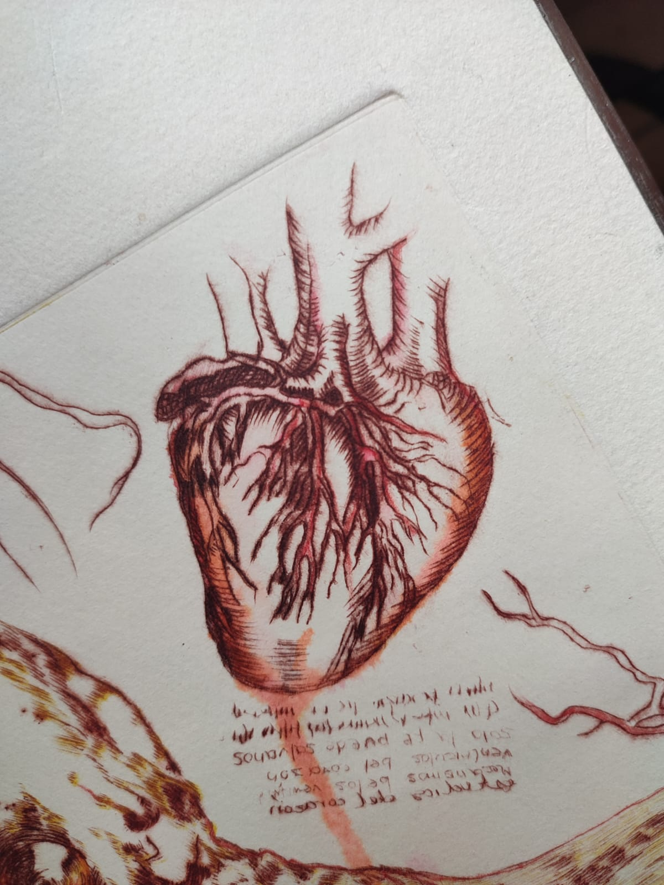
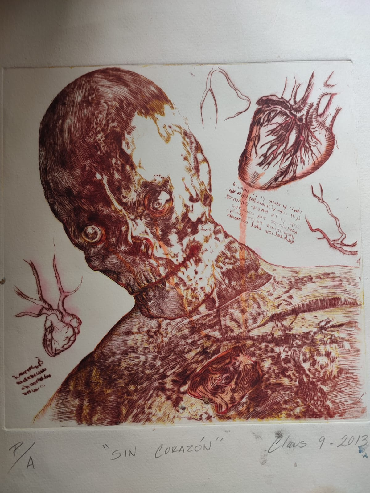
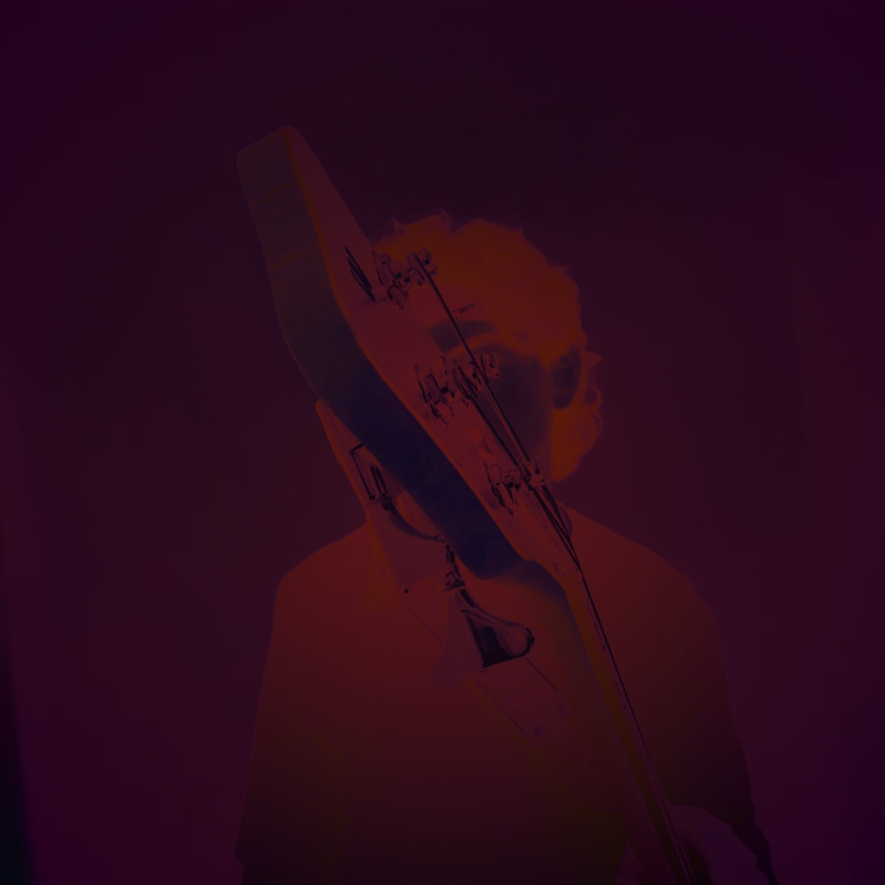
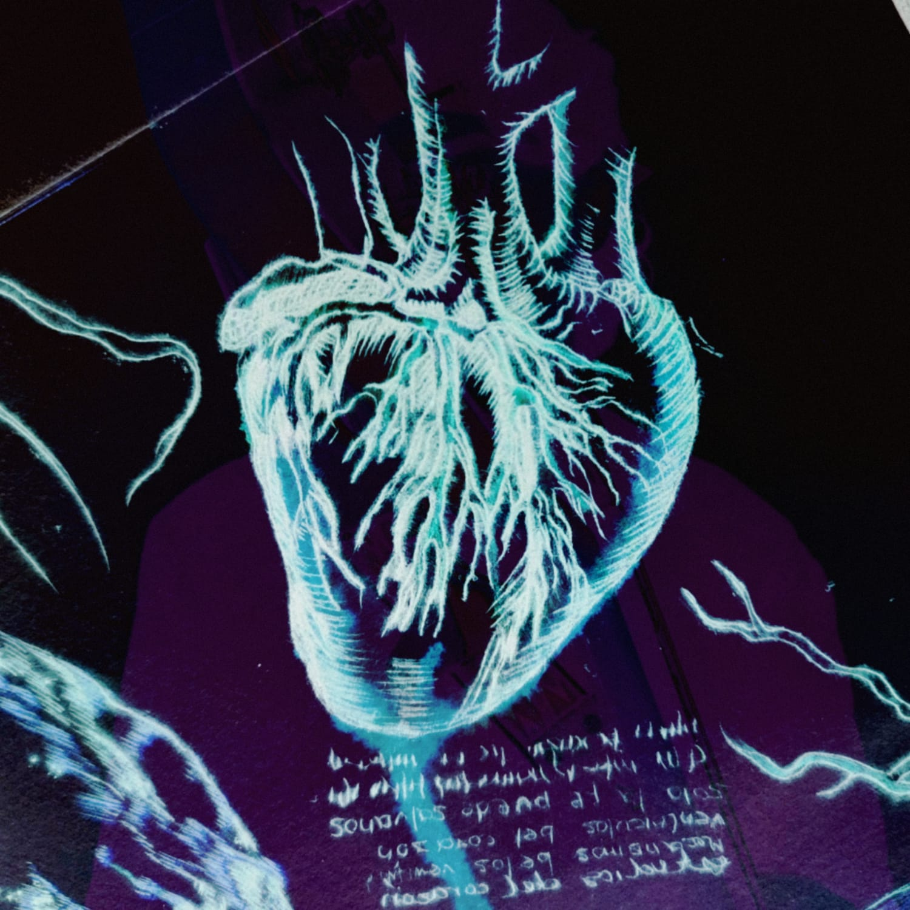
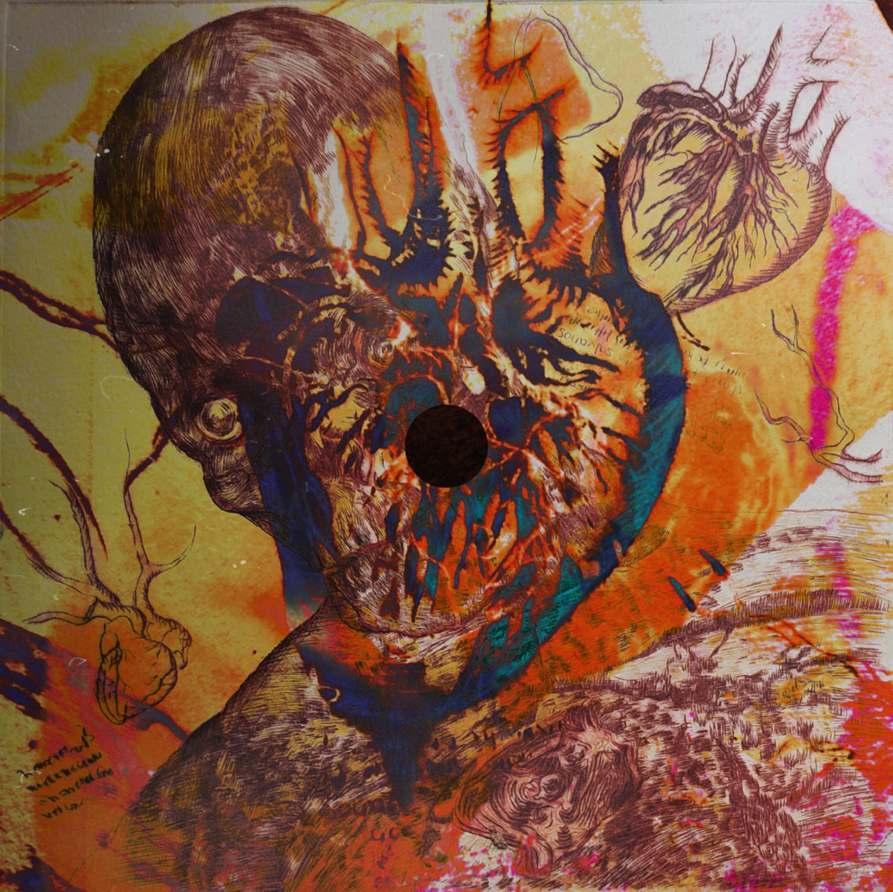
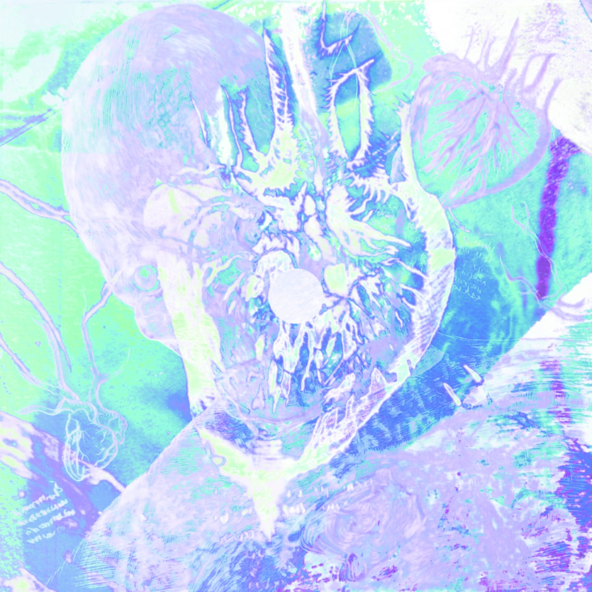

To Leave And Go
LANZAMIENTO: 18 DE NOVIEMBRE DE 2022
El Concepto
Este EP trata sobre el amor desde una perspectiva evitativa y el escapar de lo que nos mantiene atrapados.
Love At The Start trata sobre un amor no correspondido que surge de forma acelerada. Lo escribí pensando en lo extraño que resulta gustarle a alguien cuando aún no hay un conocimiento mutuo real. Por eso, el coro repite la frase "no me ames al inicio"; es sobre no entender cómo funciona ese tipo de afecto repentino y lo inevitable de que ambas partes salgan lastimadas al no saber cómo rechazar a alguien sin herir sus sentimientos.
Growing Wounds es la canción más densa del EP. Explora el deterioro de una relación donde los recuerdos empiezan a parecer un error y surge la sensación de ser extraños al no saber comunicar los sentimientos con honestidad.
El cierre da un giro reflexivo sobre la identidad, enfocándose en cómo solemos perdernos por evitar la pregunta: "¿Qué es lo que quieres?". Igual dejé un mensaje positivo diciendo que los años que te hicieron caer son los mismos que te dan la fuerza para avanzar, aceptando que algunas cosas mueren para que otras mejores nazcan, dejando el amor en manos del destino "Fate's the one who takes the love letter".
Paralysis Days trata sobre la pérdida de interés por la rutina y el desapego por la vida, aceptando la situación bajo la idea de que ese proceso sirve para forjar el carácter. Describe la experiencia de vivir en depresión, sintiendo la impotencia de no poder salir de ese estado y la sensación de ser, esencialmente, alguien muerto en vida.
OUT FOREVER Es el sentimiento de escapar de la realidad donde te sientes atrapado. Es un llamado para pedir ayuda y salir de ese estado, reflexionando sobre cómo el tiempo perdido no se puede recuperar, pero siempre existe la posibilidad de volver a ese lugar donde solías brillar más.
Proceso Creativo
Algunas de estas canciones las hice a la par de En Adversidad, pero extrañamente salió de forma natural componerlas en inglés. Creo que el idioma me permitió expresar ciertas ideas de forma más directa; al ser en inglés, pude hablar sobre amor o depresión sin preocuparme tanto de que sonara muy personal o de lo que la gente pudiera pensar de las letras.
Primero compuse Growing Wounds, puliéndola durante mucho tiempo para que fuera una pieza larga, similar a "En Adversidad". Al trabajar en ella, me di cuenta de que la progresión de acordes también funcionaba con un ritmo más acelerado, y de ahí nació OUT FOREVER.
Love At The Start surgió practicando sobre una base de batería estilo "We Will Rock You", pues me gustaba mucho ese ritmo. También tuve como referencia la forma en que algunos artistas japoneses cantan en inglés sin importarles tanto la pronunciación y diciendo las palabras como quieren. Por último, escribí Paralysis Days en mi lugar de trabajo; la compuse rápido porque quería que fuera directa y sencilla, transmitiendo esa sensación de apatía y monotonía que describe la canción.
El Arte Visual
La portada nació a partir de una obra que me regaló mi hermana en la que aparece un corazón. De ahi surgío la idea de mostrarlo totalmente expuesto en la portada y colocarme a mi de fondo para representar lo mucho que se habla desde la vulnerabilidad en el EP y poniendo a mi como algo secundario en el fondo.